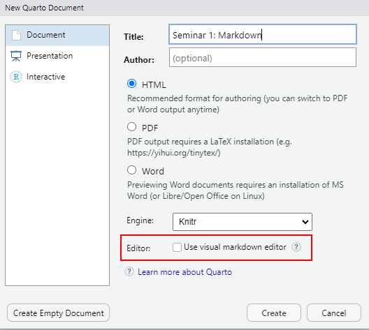

1 Reproducable Research: Projects and Markdown Notebooks
Our aim is to create reproducible research and analysis. It is a crucial component of the open science movement but is even more important for your own research or study projects. You want to create a self-contained well-documented easy-to-understand reproducible analysis. A complete self-sufficient code that others and, most importantly, future-you can easily understand saves you time and gives you a deeper insight into the results (less mystery is better in cases like these). It also makes it easier to communicate your results to other researchers or fellow students.
You should also always consider posting your results and analysis online at public repositories such as OSF, Science Data Bank, or GitHub. This not only help others but forces you into making such data + analysis archive more thoroughly. That, in turns, makes it easier for future-you to return to the data and the analysis. Using a GitHub (private) repository is a good idea even if you are not planning to collaborate with others as it gives you a version-controlled code in a cloud and makes synchronizing it between different machines easy.
1.1 Projects
One of the most annoying features of R is that it looks for files and folders only relative to its “working directory”, which is set via setwd(dir) function. What makes it particularly confusing is that your currently open file may be in some other folder. If you simply use File / Open, navigate to that file and open it, it does not change your working directory. Similarly, in R-Studio you can navigate through file system using Files tab and open some folder you are interested in but that does not make it a working directory. You need to click on More and Set As Working Directory to make this work (that trick won’t work for an opened file).

In short, it may look that you are working in a particular folder but R will have its own opinion about this. Whenever this happens, it is really confusing and involves a lot of cursing as R cannot find files that you can clearly see with your own eyes. To avoid this, you should organize any program, project or seminar as an R Project, which assumes that all necessary files are in the project folder, which is also the working directory. R Studio has some nice project-based touches as well, like keeping tracking of which files you have open, providing version control, etc. Bottom line, always create a new R-project to organize yourself, even if it involves just a single file to try something out. Remember, “Nothing is more permanent than a temporary solution!” Which is why you should always write your code, as if it is for a long term project (good style, comprehensible variable names, comments, etc.), otherwise your temporary solution grows into permanent incomprehensible spaghetti code.
Let us create a new project for this seminar. Use File / New Project…, which will give you options of creating it in a new directory (you get to come up with a name), using an existing directory (project will be named after that directory), or check it out from remote repository (if you know git, this is very convenient). You can do it either way. This will be a project folder for this seminar and you will need to put all notebooks and external data files into that folder. Next time you need to open it, you can use File / Recent Projects menu, File / Open Project…_ menu, or simply open the
1.2 Quattro and RMarkdown notebooks
There are two very similar notebook formats in R: an older R Markdown and a new Quatro. On the one hand, the latter is the future, so it would make sense to use Quatro notebooks. On the other hand, there is little practical difference for you, as from a R-only end-user point of view, they differ mostly in how they specify chunk options (more on that later).
Both RMarkdown and Quattro rely on a markdown language to combine formatted text, figures, references (via bibtex) and cross-references with code7. When a notebook is knitted, all the code is ran and its output, such as tables and figures, is inserted into the final document. This allows you to combine the narrative (the background, the methodology, comments, discussion, conclusions, etc.) with the actual code that implements what you described. And, you can be sure that the figures and numbers are the latest correct version.
Notebooks can be knitted into a variety of formats including HTML, PDF, Word document, EPUB book, etc. Thus, instead of creating plots and tables to save them into separate files so you can copy-paste them into your Word file (and then redoing this, if something changed, and trying to find the correct code that you used the last time, and wondering why it does not run anymore…), you simply “knit” the notebook and get the current and complete research report, semester work, presentation, etc. Even more importantly, same goes for others, as they also can knit your notebook and generate its latest version in format they need. All exercises will involve using RMarkdown notebooks, so you need to familiarize yourself with them.
We will start by learning the markdown, which is a family of human-oriented markup languages. Markup is a plain text that includes formatting syntax and can be translated into visually formatted text. For example, HTML and LaTeX are markup languages. The advantage of markup is that you do not need a special program to edit it, any plain text editor will suffice. However, you do need a special program to turn this plain text into the document. For example, you need Latex to compile a PDF or a browser to view HTML properly. However, anyone can read your original file even if they do not have Latex, PDF reader, or a browser installed (you do need Word to read a Word file!). Markdown markup language was designed to make formatting simple and unobtrusive, so the plain document is easier to read (you can read HTML but it is hardly fun!). It is not as feature-rich as HTML or LaTeX but covers most of your usual needs and is very easy to learn!
Create a new markdown file via File / New File / Quatro Document… menu. Use Seminar 1: Markdown for its title and HTML as default output format. The new RStudio makes you life easier by giving you a WYSIWYG visual editor option, which you can use later, but for this seminar disable it and learn how to use markdown directly

Save the file (press Ctrl + S or use File/Save menu) calling it seminar-01 (R Studio will add .qmd extension automatically). The file you created is not empty, as R Studio is kind enough to provide an example for you (interestingly, you get a different example if you create RMarkdown file instead). Knit the notebook by clicking on Knit button or pressing Ctrl+Shift+K to see how the properly typeset text will look (it will appear in a Viewer tab).
1.2.1 RMarkdown template

Let us go through the default RMarkdown notebook that R Studio created for us (it has more content than a default Quatro document) that you can see above or can create yourself via File / New File / R Markdown… (not R notebook!).

The top part between two sets of --- is a notebook header with various configuration options written in YAML (yes, we have two different languages in one file). title, author, and date should be self-explanatory. output defines what kind of output document knitr will generate. You can specify it by hand (e.g., word_document) or just click on drop down next to Knit button and pick the option you like (we will use the default HTML most of the time). These are sufficient for us but there are numerous other options that you can specify, for example, to enable indexing of headers. You can read about this at yihui.org/knitr.

The next section is the “setup code chunk” that specifies default options for how the code chunks are treated by default (whether they are executed, whether the output, warnings, or messages are shown, etc.). By default code in chunks is run and its output is shown (echo = TRUE) but you can change this behavior on per-chunk basis by pressing the gear button at the top-right. The setup chunk is also a good place to import your libraries (we will talk about this later) as it is always run before any other chunks (so, even if you forgot to run it to load libraries, R Studio will do this for you).

Next, we have plain text with rmarkdown, which gets translated into formatted text when you click on Knit button. You can write like this anywhere outside of code chunks to explain the logic of your analysis. You should write why and how the analysis is performed but leave technical details on programming to the chunk itself, where you can comment the code.

Finally, we have our first “proper” chunk of code (the “setup” chunk above is a special case). A code chunk is simply the code embedded between
```{r <name of the chunk} and the seconds set of ticks ```. Here r specifies that the code inside is written in R language but you can use other languages such as Python (via reticulate package), Stan, or SQL. The name of the chunk is optional but I would recommend to specify it, as it reminds you what this code is about and it makes it easier to navigate in large notebooks. In the bottom-left corner, you can see which chunk or section you are currently at and, if you click on it, you can quickly navigate to a different chunk. If chunks are not explicitly named, they will get labels Chunk 1, Chunk 2, etc. making it hard to distinguish them.

There are additional options that you can specify per chunk (whether to run the code, to show the output, what size the figures should be, etc.). Generally we won’t need these options but you can get an idea about them by looking at the official manual. You can create a chunk by hand or click on “Create chunk” drop-down list (in this case, it will create the chunk at the position of the cursor)

Finally, you run all the code in the chunk by clicking on Run current chunk button at the top-right corner of the chunk or by pressing Ctrl+Shift+Enter when the you are inside the chunk. However, you can also run just a single line or only selected lines by pressing Ctrl+Enter. The cool thing about RMarkdown in RStudio is that you will see the output of that chunk right below it. This means that you can write you code chunk-by-chunk, ensure that each works as intended and only when knit the entire document. Run the chunks in your notebook to see what I mean.

1.2.2 Quatro template
Working with Quatro notebook is very similar but certain YAML header options are different (e.g., format: html instead of output: html_document) and chunk settings are inside the chunk (#| echo: false) instead of being inside curly brackets ({r echo=FALSE}). These differences become important when you go in deeper and want to build a website or write a book using Quatro but won’t matter much for this seminar.
1.3 Exercise
For the today’s exercise, I want you to familiarize yourself with markdown. Create a Quatro notebook for this. Go to markdownguide.org and look at basic and extended syntax (their cheat sheet is also very good). Write any text you want that uses all the formatting and submit the .qmd file to MS Teams. Please note that if you use an external image, you must submit it (zip everything into a single file) and the path that you use must be relative. Remember, if your file path is “c:/Documents/R-seminar/funny.png” chances are I do not have that file and that set of folders on my computer and your markdown won’t render for me.